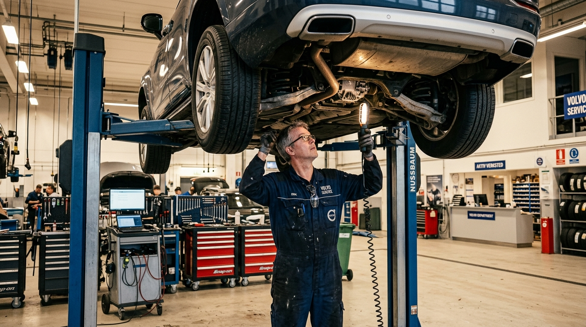
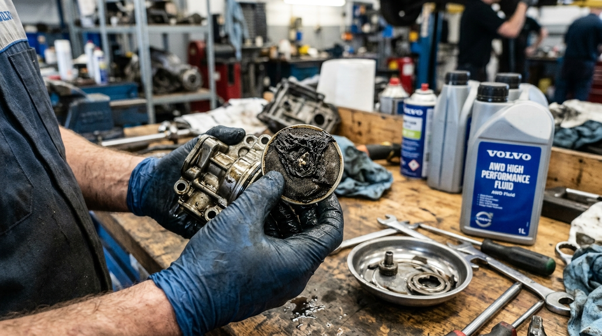
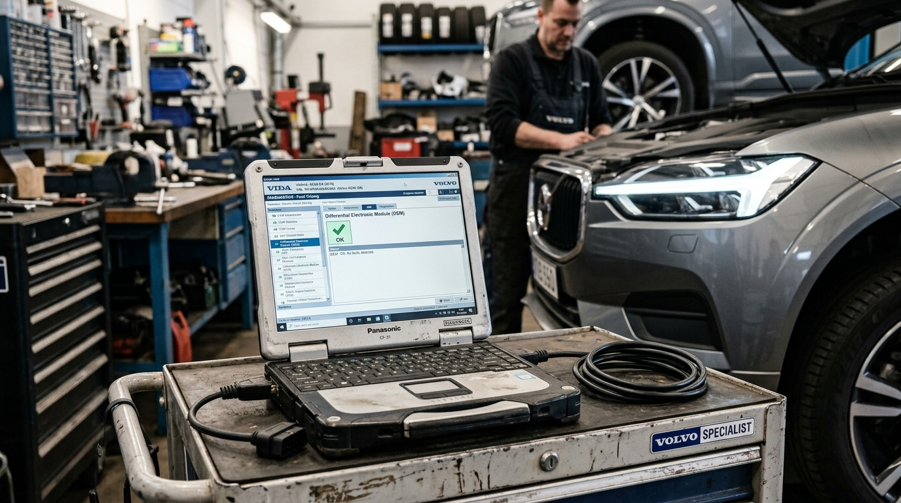

Отказ полного привода на Volvo XC60: спасение забитого насоса Haldex 5

Жалоба клиента и симптомы
В наш специализированный сервис обратился владелец кроссовера Volvo XC60 2.4 D4 AWD с пробегом 136 000 км. С наступлением первых заморозков и слякоти владелец заметил, что при динамичном старте передние колёса срываются в длительную пробуксовку, а задняя ось практически не подключается. При заезде на обледенелый бордюр автомобиль вёл себя как исключительно переднеприводный. На панели приборов периодически всплывало предупреждающее сообщение «AWD требует обслуживания».
Компьютерная диагностика VIDA
Первым делом мы подключили дилерский диагностический комплекс Volvo VIDA / DiCE. Сканирование блоков управления выявило:
- В блоке управления дифференциалом DEM (Differential Electronic Module) зафиксирована активная ошибка
DEM-P188914— «Рабочие характеристики масляного насоса. Ошибки сигнала / цепи». - В режиме реального времени ток питания электромотора насоса превышал допустимые 4.5 Ампера. Блок DEM при такой перегрузке принудительно отключает насос во избежание сгорания электронных ключей и обмоток мотора.
- Давление масла в гидросистеме муфты отсутствовало — фрикционные диски оставались разомкнутыми.
Дефектовка и почему это происходит на Haldex 5
В отличие от муфт Haldex 4-го поколения, где был предусмотрен отдельный сменный фильтр-картридж, в конструкции Haldex 5 инженеры убрали сменный фильтр. Вся нагрузка по фильтрации ложится на маленькую пластиковую сеточку на торце подкачивающего насоса.
По заводскому регламенту масло в Haldex считается «залитым на весь срок службы», однако фрикционы в процессе работы неизбежно истираются. Образуется смолистый абразивный шлам, который превращает масло в густой солидол и наглухо закупоривает приемную сетку насоса.
Выполненные работы
- Демонтаж насоса: аккуратное снятие насоса муфты без повреждения проводки и посадочного места.
- Дефектовка узла: сетка насоса была забита плотной масляно-фрикционной пастой более чем на 90% (см. фото ниже). Насос испытывал тяжелое масляное голодание.
- Ультразвуковая и химическая очистка: полная промывка сетки заборника, деликатная продувка каналов и очистка коллекторного узла электромотора от угольной пыли.
- Промывка масляной ванны муфты: вымывание всех остатков старого разложившегося масла и осадка со дна картера муфты.
- Установка с новыми уплотнениями: замена резиновых кольцевых прокладок насоса на новые оригинальные манжеты.
- Заправка свежим маслом: залито оригинальное синтетическое трансмиссионное масло
Volvo AWD High Performance Fluid (арт. 31367940). - Калибровка и адаптация в VIDA: проведение принудительного теста насоса, прокачка гидравлического контура и адаптация тока насоса.
Результат ремонта
Благодаря своевременному обращению насос удалось спасти чисткой — его электродвигатель не успел сгореть. После сброса адаптации и прокачки муфты ток насоса вернулся в идеальные заводские параметры (1.8–2.2 А). Тестовая поездка показала мгновенное подключение задней оси при малейшей пробуксовке, ошибка на приборной панели погасла. Клиент сэкономил свыше 40 000 рублей, избежав покупки нового оригинального насоса в сборе.
Диагностика VIDA, снятие насоса, очистка и калибровка: 6 500 ₽
Оригинальное масло Volvo AWD Fluid + ремкомплект уплотнений: 8 200 ₽
Итого под ключ: 14 700 ₽ (Гарантия на работы — 12 месяцев)

Сетка насоса муфты до промывки: слой густого масляного шлама

Контрольная диагностика и адаптация блока DEM через Volvo VIDA